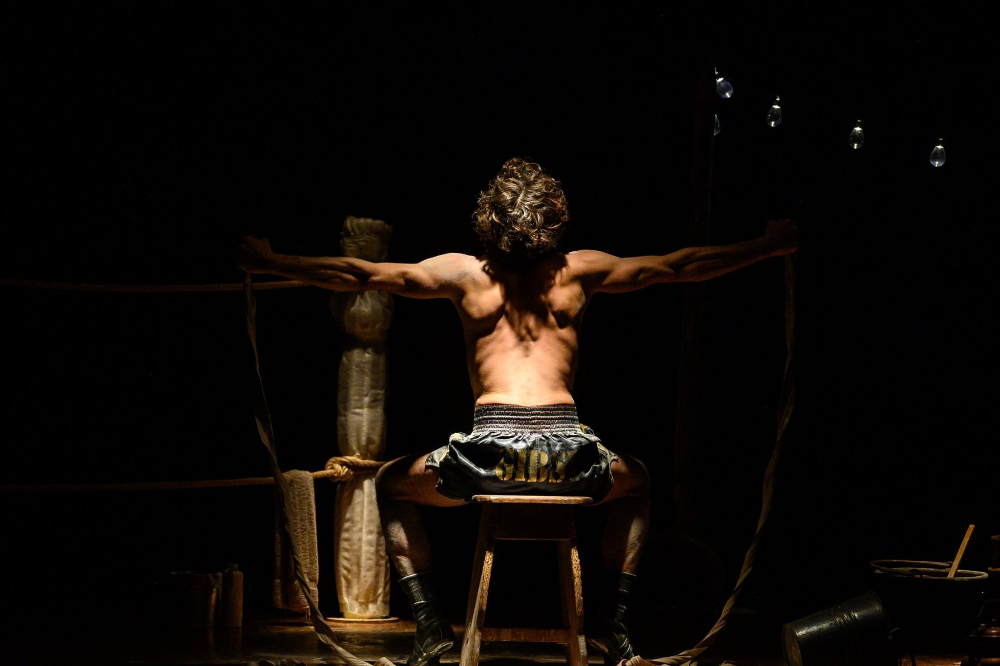

Il Teatro delle Stanze si costituisce associazione il 28.01.2008, a Poggibonsi (Siena), con l’obiettivo di creare una compagnia di teatro, a seguito del laboratorio teatrale tenutosi a partire da 2005 sotto la guida di Massimo Salvianti. La genesi del laboratorio è stata possibile nell’ambito del progetto “teatro e memoria”, col quale il Comune di Poggibonsi ha voluto tradurre in spettacolo le testimonianze scritte dei sopravvissuti al bombardamento di Poggibonsi avvenuto nel dicembre del ’43. L’esperienza laboratoriale di formazione è proseguita con l’ulteriore supporto di Gila Manetti ed il secondo anno di attività si è concentrato sullo studio di alcune delle più conosciute opere di Shakespeare, rappresentate poi pubblicamente. Con il terzo anno di attività del gruppo, ancora guidato da Massimo Salvianti e Gila Manetti, si è concretizzata la volontà di una crescita artistica, tradotta nella messa in scena di un testo rivisitato della tragedia greca e nella volontà di creare un’entità autonoma, stimolata dalle molte possibilità di sperimentazione che il teatro offre, investendo sulle opportunità territoriali e nel teatro d’occasione. Nel corso degli anni il gruppo ha subito molteplici evoluzioni, sia in termini di risorse umane che di spunti artistici, anche grazie alle svariate occasioni di visibilità avute nell’ambito di diversi festival, rassegne e cartelloni sul piano nazionale, permettendo di consolidare una propria identità. Ad oggi il Teatro delle Stanze è guidato da Marco Natalucci e Patrizia Corti, scelta legata alla necessità di sperimentare un teatro fatto di progetti propri e totalmente originali che non si leghino solo all’occasione territoriale e che s’ispirino chiaramente ad una poetica capace di connotare gli attori come appartenenti ad un progetto specifico. Peculiarità del gruppo, e dei membri che lo compongono, è gravitare all’interno di un network di professionisti che rappresentano l’eccellenza del mondo teatrale italiano (Ugo Chiti, Lucia Socci, Giovanni Guidelli, Riccardo Massai…) con cui il Teatro delle Stanze ha avuto l’opportunità di collaborare nel corso della propria storia; ciò permette un arricchimento qualificante per gli attori delle Stanze ed uno scambio continuo di esperienze teatrali ed umane legate dalla comune passione per l’arte recitativa, la necessità di dichiarare il proprio stile e la volontà di far bene il teatro... ed al teatro!